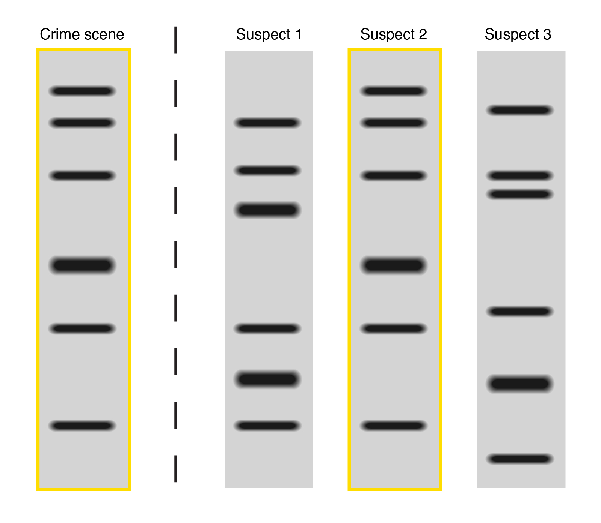
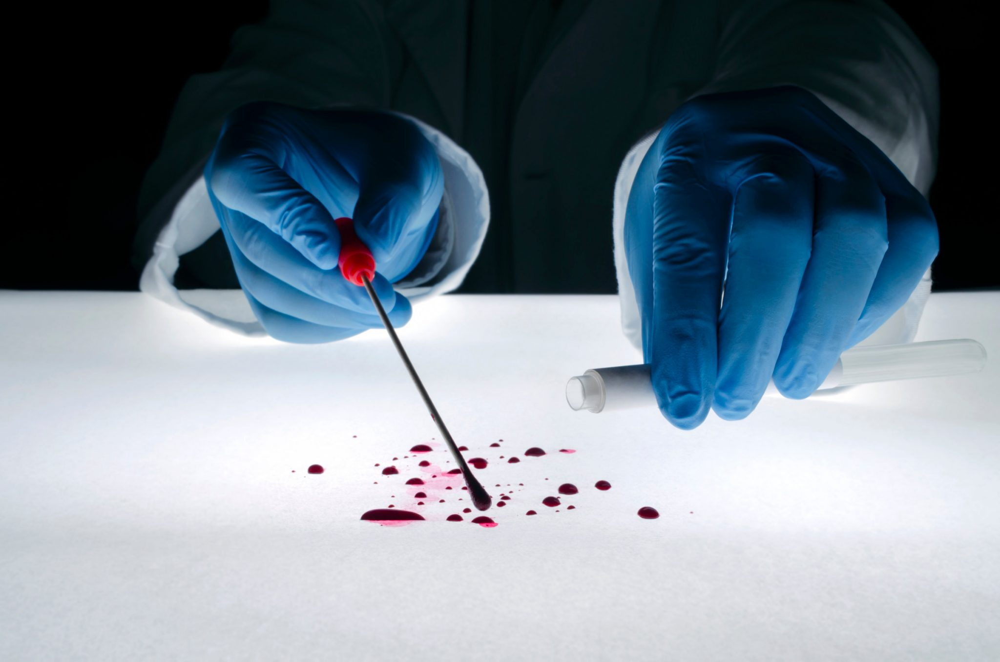
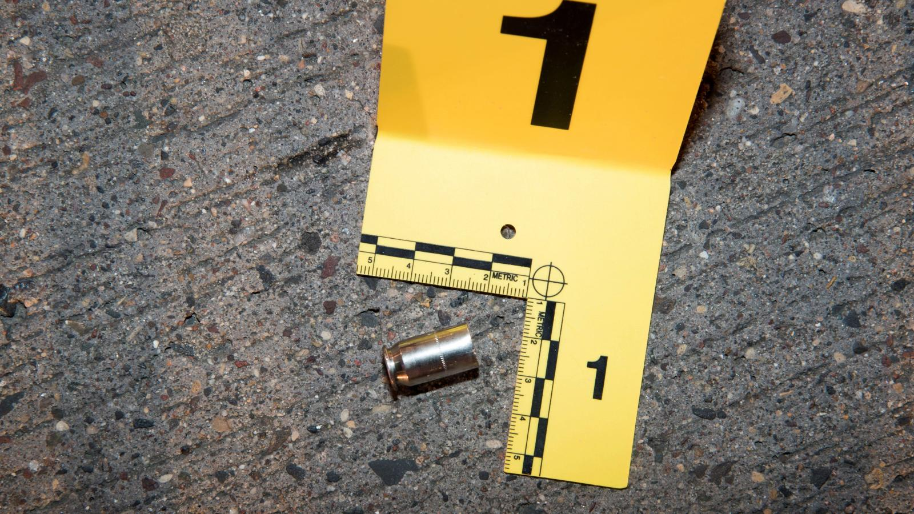
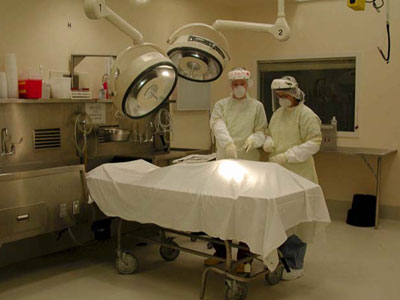

Genetic fingerprint: We, humans, all have chromosomes. Chromosomes are made of deoxyribonucleic acid, often called DNA. It is DNA that carries the “blueprint” (genes) from which “building orders” are obtained to direct the growth, maintenance, and activities that go on within our bodies. Everyones has their own DNA that are only unique to them. No two people have the same DNA.
Blood evidence: Before fingerprinting, many used blood evidence. Not as useful as fingerprinting but it can help prove innocence. There are 4 types of blood - A, B, AB, and O. There were only a percentage of people in the world that has a blood type. If the blood found on the scene that is not the victim's blood and if type AB and the suspect has a blood type of O then the suspect is the murderer.
Ballistics and tool markings: Basically, a process that analyzes the tool/ murder weapon. Knowing what killed the victim can help investigators know where to search. Some weapons are only found in specific regions.
Autopsies: Autopsies tells us how the victim was killed and how injuries that were inflicted. The people that do the autopsies analyze the dead body and they can find how the person die, and when they die. This is important because autopsies can find new discoveries/evidences that even the murderers don’t know they left behind.
